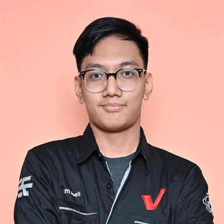

Technical Consultant | Dynamics 365 Developer | Software Engineer
Technical Consultant with 2 years of experience specializing in Microsoft Dynamics 365 Business Central ERP. Worked on multiple projects that involve custom report building, business processes, and handling on-premise to cloud migrations. Skilled in Microsoft AL with a focus on building practical ERP customizations and workflows.